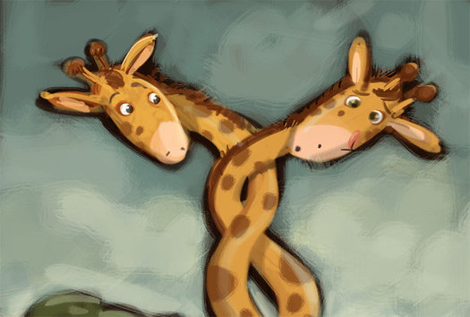

Las jirafas son herbívoras, lo que significa que comen plantas en lugar de carne. Usan sus largos cuellos y lengua para llegar mejor a las hojas de los árboles, y sus tipos favoritos de hojas son las de árbol de acacia. Una jirafa adulta comerá, generalmente, más de 30 kilos de hojas, ramitas y frutas cada día para alimentarse.
Las jirafas son animales rumiantes, lo que significa que tienen más de un estómago. De hecho, las jirafas tienen cuatro estómagos, ya que los otros tres estómagos adicionales les permiten digerir mejor los alimentos. Beber es una acción que, aunque necesaria, pueden entrañar bastante peligro para las jirafas, y es que mientras beben pierden el contacto visual con sus posibles depredadores y se vuelven más vulnerables. Afortunadamente no necesitan beber mucho, ya que hay mucha agua en las hojas que comen.
